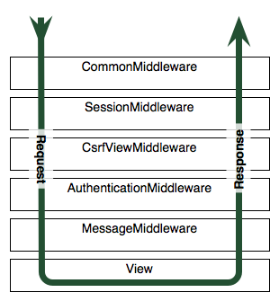

Django incopora casi todo lo necesario parala autentificación y registro de usuarios con:
| Está implantado como middleware, unas funciones añaden información al request interceptandolo antes y después la aplicación |  |
Django utiliza sesiones y midleware para gestionar automáticamente la autentificación de usuarios, con funciones para el login y el registro
E incluso tiene un decorador para ponerlo en las vistas que requieran usuarios autenficados, que redirije automáticamente al formulario de login
from django.shortcuts import render
from django.contrib.auth import authenticate, login
def login_view(request): # no se puede llamar 'login' !¡ !¡
context = {}
usuario = request.POST.get ('username')
contraseña = request.POST.get ('password')
# Autenfificar, devuelve objeto usuario
user = authenticate (username=usuario, password=contraseña)
if user is not None and user.is_active:
login (request, user)
context['mensaje'] = 'Logeado como %s' % (usuario)
else:
context['mensaje'] = 'No usuario o contraseña incorrecta'
return render (request, 'login.html', context)
Una vez autentificado, el objeto usuario está disponible en las plantillas:
<ul>
{% if user.is_authenticated %}
<li>Logeado como {{user.username}}</li>
<li><a href="{% url 'auth_logout' %}">Logout</a></li>
{% else %}
<li><a href="{% url 'auth_login' %}">Login</a></li>
{% endif %}
</ul>
Con formulario:
from django import forms
from django.contrib.auth.models import User
class register_form (forms.ModelForm):
username = forms.SlugField (max_length=8, label='Usuario:')
email = forms.EmailField (label='Email:')
password = forms.SlugField (max_length=8,
help_text="(números y letras hasta 8)",
widget=forms.PasswordInput(),
label='Contraseña:')
class Meta:
model = User
fields = ('username', 'email', 'password')
En la plantilla:
{% extends 'base.html' %}
{% block contenido %}
<br>
{{ mensaje }}
<form method="post" action="{% url 'registro' %}">
{% csrf_token %}
{{ form.as_p }}
<input type="submit" name="Registro" value="Enviar" />
</form>
{% endblock %}
En el controlador
from django.shortcuts import render
def registro (request):
form = register_form()
context = { 'mensaje': 'Estamos en Registro', 'form': form,}
if request.method == 'POST':
form = register_form(request.POST)
if form.is_valid():
# Save the user's form data to the database.
user = form.save()
# Now we hash the password with the set_password method
user.set_password(user.password)
# Once hashed, we can update the user object
user.save()
context['mensaje'] = u'Registrado como %s' % (user.username)
else: # Do not vaidate
context['form'] = form
return render (request, 'registro.html', context)
En el paquete django-registration-redux, están todos los formularios y plantillas necesarias, incluso para el registro en dos fases
En este tutorial, hay indicaciones para su puesta en marcha
También hay paquetes para autentificación en redes sociales django-allauth